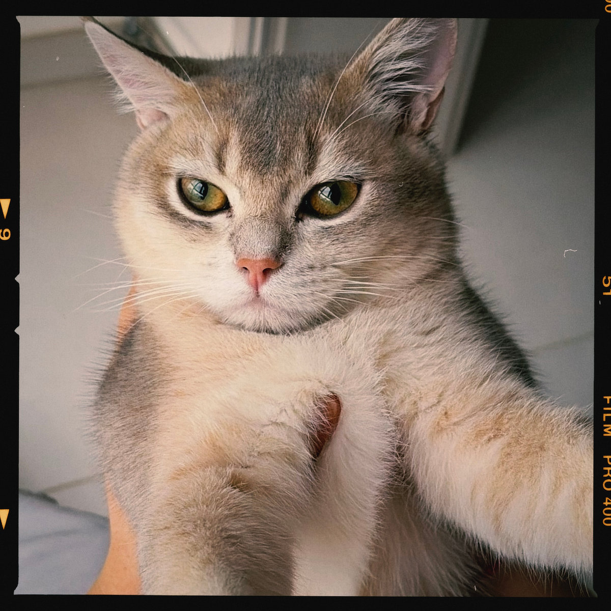

- 圆圆生日：2026-2-10
- 猫粮：皇家（可能很快会换渴望）
ENGLISH
When Yuanyuan Turned Seven Months
- Yuanyuan's birthday: February 10, 2026
- Cat food: Royal Canin (possibly switching to Orijen soon)
At seven months, Yuanyuan often sits quietly in front of the glass, looking out the window as if he has something on his mind. When he first came home, he wanted to stay close; now, holding him for even a minute is a challenge. He is growing into himself, little by little.

